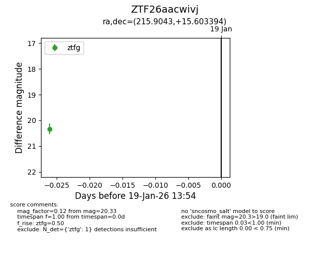
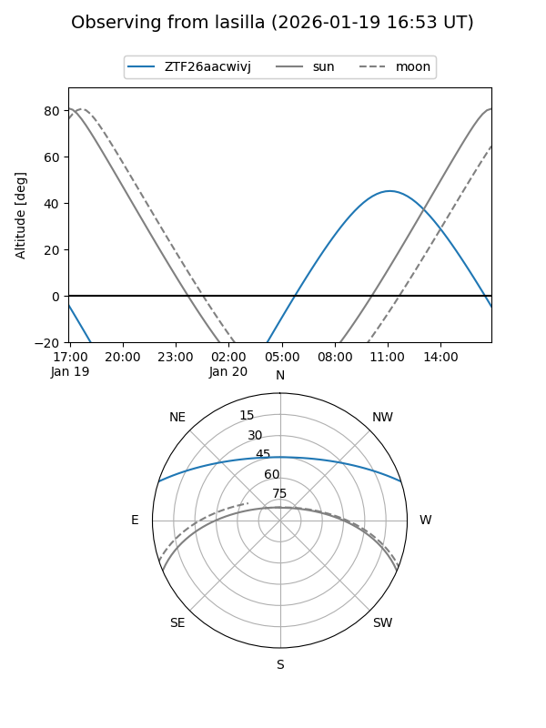
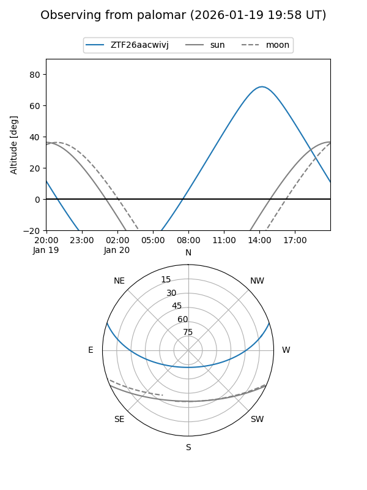

ZTF26aacwivj
Target ZTF26aacwivj at 2026-01-19 13:56
Aliases and brokers:
FINK: link
Lasair: link
ALeRCE: link
alt names
ZTF26aacwivj (ztf,fink_ztf)
Coordinates:
equatorial (ra, dec) = 215.9043,+15.60339
equatorial (HMS+DMS) = 14:23:37.03,+15:36:12.22
galactic (l, b) = (9.3283,+65.70422)
Flags:
Photometry:
last ztfg=20.33
1 ztfg detections
Lightcurve

Visibility


Additional plots